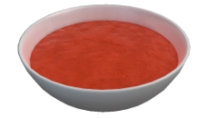

Tomato Soup

A simple tomato soup recipe taken off from Cooking Simulator, because I don't want to type everything out from a real recipe.
For demonstration purposes only. Please don't try this at home. You might end up with bad tomato soup.
Ingredients
- 700ml Chicken Broth
- 12g Salt
- 12g Black Pepper
- 6g Cayenne Pepper powder
- 8 Tomatoes
- 1 Onion
- 150g Sour Cream
Steps
- Add Chicken Broth, Salt, Black Pepper, Cayenne Pepper powder, Tomatoes, and Onion to a pot.
- Boil for 60s.
- Blend with a blender.
- Add Sour Cream.
- Pour into deep plate. Serve hot.